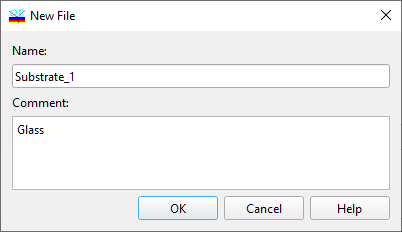

Creating New Database File
Creating New Database File
Navigation: OptiLayer Menu Commands > Data Menu > Database Access Dialog >
Creating New Database File
` <idh_loading_data.html>`__ ` <idh_modify_database.html>`__ ` <idh_save_database_file.html>`__
This command is activated when you use the “Copy,” “Rename,” or “New” options to create a new database file from the Database Access Dialog.
It enables you to specify a Name for the new database file. You have the flexibility to choose any name, which can include spaces and other characters. An optional Comment can also be entered. For both existing and newly created files, their name and comment can be modified using the “Rename” command.
